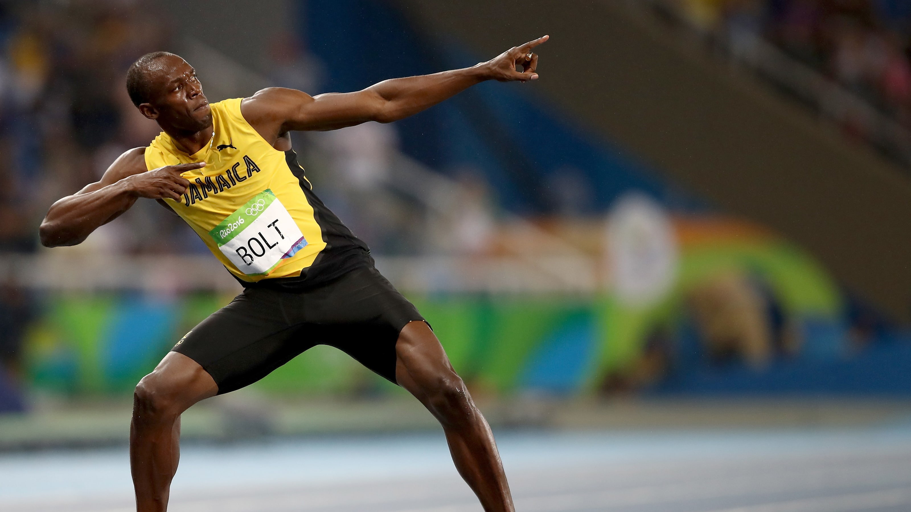
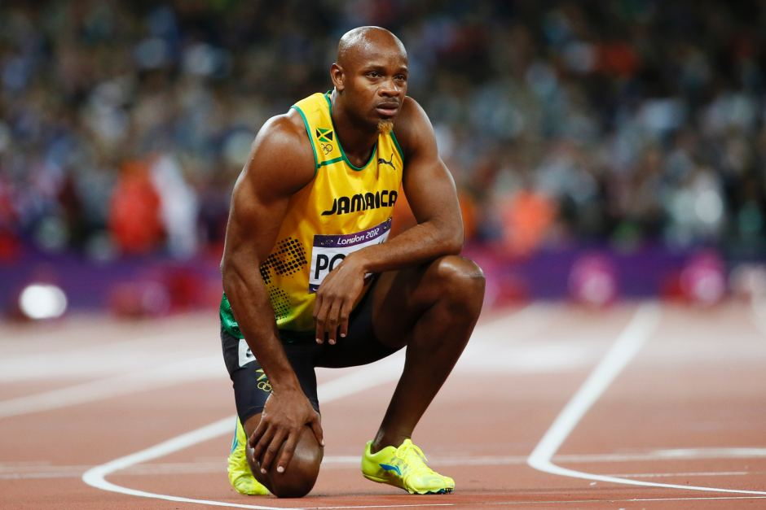

Hello! I'm Likhit Ajeesh, a sophomore in VIT, Vellore. I have a few years of experience in CS. During my 12th, I have done C++ programming & DBMS-MySQL. After joining VIT, I have done C, C++ and Python programming too. Right now, I'm learning MERN Stack. My plan is to enhance my coding, web development skills and explore every other domain of CS within these 4 years of my college life.
Usain Bolt is the fastest human in history by average top speed. The Jamaican was born in 1986 in Sherwood Content, a small town in Northern Jamaica. . At the 2009 World Championships in Athletics in Berlin, Germany, Usain Bolt set a new world record by running 100 meters in 9.58 seconds. A world record that remains unbroken to date.
Much like the fastest human on Earth, the second fastest is Jamaican as well. Yohan Blake was born in 1989 in a small town in the Western Jamaican Parish of Saint James. When Usain Bolt was once asked to name the one human who could seriously challenge him, his answer was Yohan Blake. Blake certainly came close when he ran 100 meters in 9.69 seconds at an athletics event in Lausanne, Switzerland.
Tyson Gay is the third fastest human and fastest non-Jamaican in history. The American professional sprinter was born in 1982 in Lexington, Kentucky. In 2009, at an athletics event in Shanghai, China, Gay ran 100 meters in 9.69 seconds and is therefore practically as fast as Yohan Blake. He is being ranked behind Blake only because Gay’s sprint was wind-assisted.
Asafa Powell is yet another Jamaican who belongs to the fastest people in history. Born in 1982 in Spanish Town, Jamaica. Asafa Powell ran 100 meters in 9.72 at an athletics event in Lausanne, Switzerland in 2008. He is now ranked as the fourth fastest human in history.
Justin Gatlin completes the Top 5 of fastest people in history. Gatlin was born in New York City in 1982, but mainly grew up in Pensacola, Florida. Gatlin ran his personal best (100 meters in 9.74 seconds) in 2015, at the age of 33, at an athletics even in Doha, Qatar. In 2019, at the age of 37, he also became the oldest sprinter in history to win a medal at the World Athletics Championships.